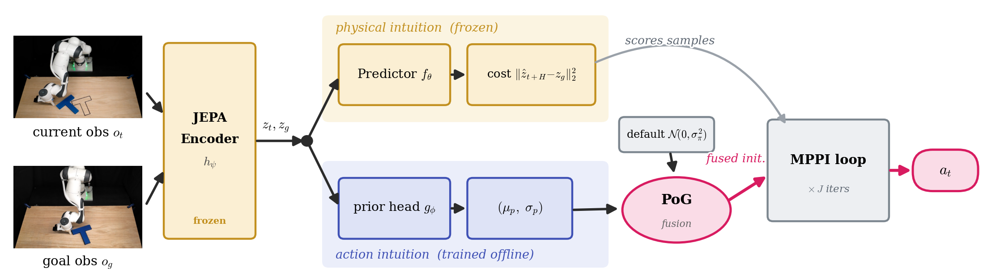
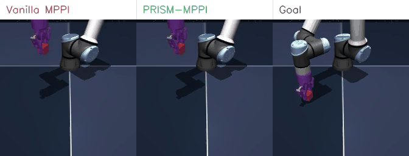
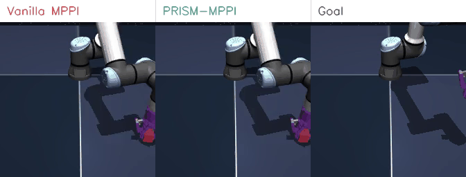
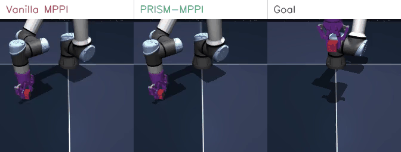
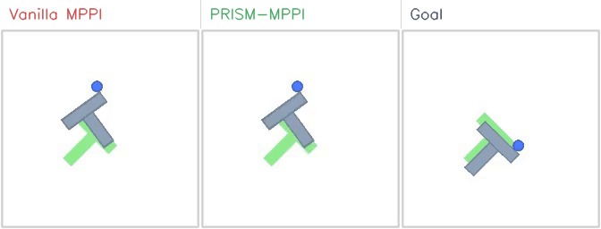
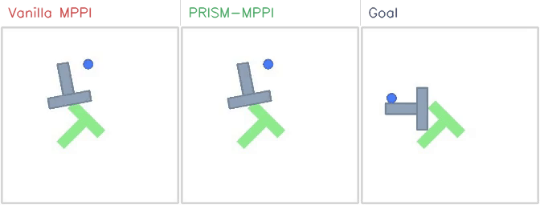
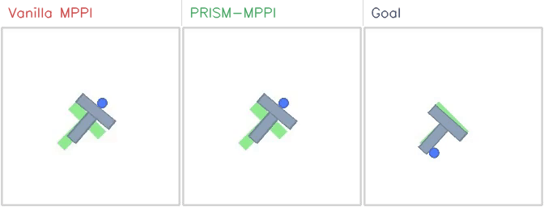
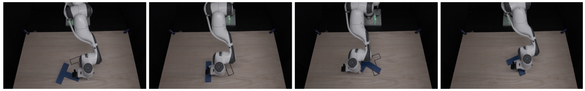

The world model is the prior
Two intuitions, one encoder
The same frozen JEPA encoder that gives the planner its physical intuition (what a state leads to) also encodes an action intuition (which action to take). PRISM simply reads the second one out.
No architectural bloat
Prior work bolts on a separate visual encoder or a large VLM to get an action prior. PRISM needs only a ~1M-parameter MLP on cached features — about 1% of the world model, running in sub-millisecond time.
Confidence-aware & safe
A closed-form Product-of-Gaussians fuses the prior by its precision: it narrows the search where the prior is confident and gracefully reverts to vanilla planning where it is not — no gates, no tuning.
Abstract
A learned world model provides a powerful physical intuition for evaluating future states. But its effectiveness in continuous control also depends critically on how candidate actions are generated for model-based planning. Rather than solely asking how accurately a model can simulate the future, we ask: which candidate actions are worth evaluating in the first place? Existing planners typically search arbitrarily, or use expert demonstrations only to initialize a sampling mean—discarding the expert's state-conditioned confidence. Properly guiding this search requires a robust action prior, yet current approaches often rely on independent visual encoders or large-scale VLMs to obtain one. We argue that this architectural bloat is unnecessary: the exact same data—and the learned representations of the world model itself—inherently encode the agent's action intuition.
We introduce PRISM, a task-agnostic framework that extracts both from a single dataset while maintaining strict architectural simplicity. Building on a standard JEPA-style latent world model, PRISM attaches a lightweight MLP directly to its frozen encoder to predict a state-conditioned Gaussian prior. At plan time, PRISM fuses this prior into the planner's sampling distribution via a precision-weighted Product-of-Gaussians update. This parameter-free, closed-form integration steers the sampling process, making the prior confident where it is and ceding control where it is not. PRISM improves success rates by 35 percentage points over vanilla world-model-based MPC on Cube and 32 percentage points on PushT, without introducing significant inference overhead.
How PRISM works

One frozen JEPA encoder, two intuitions. The encoder \(h_\psi\) embeds the current observation \(o_t\) and goal \(o_g\). From these embeddings PRISM reads a physical intuition (top: the frozen predictor \(f_\theta\) rolls out candidates and scores them by embedding-MSE to the goal) and an action intuition (bottom: a ~1M-parameter MLP head \(g_\phi\) outputs a Gaussian prior \((\mu_p,\sigma_p)\) over the next actions). A closed-form Product-of-Gaussians fuses this prior with the planner's default initialization \(\mathcal{N}(0,\sigma_\pi^2)\); the fused initialization drives the otherwise-unmodified MPPI loop (mean updated, \(\sigma\) fixed across \(J\) iterations). Only \(g_\phi\) is trained, and only offline.
The planner's default initialization \(\mathcal{N}(0,\sigma_\pi^2)\) is uninformed, so at small sample budgets it spends iterations rediscovering action directions the demonstrations already exhibit. PRISM supplies that missing structure directly at the sampling step. Treating the planner's default and the learned prior as two Gaussian beliefs, their precision-weighted product gives the fused initialization:
Because MPPI keeps \(\sigma\) fixed across iterations (unlike CEM, which refits it), the prior's per-state confidence \(\sigma_p\) is not a one-shot warm-start — it persists through the entire optimization. When the prior is confident (\(\sigma_p\) small), \(\tau_p\) dominates and the search concentrates around \(\mu_p\); when it is uncertain (\(\sigma_p\) large, e.g. out-of-distribution states), \(\tau_p\to0\) and the initialization automatically reverts to vanilla planning. This per-coordinate fallback needs no learned gates and bounds the cost of a mis-tuned prior.
Results
Vanilla sampling on JEPA-style world models wastes its budget on uninformed action sampling. Reading an action prior from the world model's own frozen encoder and fusing it at the sampling step lifts success by +23–35 pp over the LeWM world-model baseline — at a matched planner, compute, and sample budget.
| Method | PushT | Cube | ||||
|---|---|---|---|---|---|---|
| \(K=32\) | \(K=64\) | \(K=128\) | \(K=32\) | \(K=64\) | \(K=128\) | |
| DINO-WM (MPPI) | 4 ± 2 | 3 ± 2 | 5 ± 1 | 45 ± 4 | 49 ± 6 | 41 ± 3 |
| LeWM (MPPI) | 59 ± 5 | 61 ± 7 | 57 ± 6 | 46 ± 2 | 44 ± 5 | 44 ± 4 |
| PRISM (MPPI, Ours) | 82 ± 4 | 86 ± 6 | 89 ± 4 | 79 ± 2 | 78 ± 3 | 79 ± 6 |
Success rate (%), mean ± std over 3 seeds {0, 1, 42}, \(N=50\) episodes per seed, at sample budgets \(K\in\{32,64,128\}\). All variants use the same frozen world model and an MPPI planner (\(J=30\) iterations, horizon 5, action block 5). The gain comes from the world model's own representations, not from changing the planner.
Qualitative comparisons
Same episode, same start state, same compute. Each clip shows Vanilla MPPI (left) and PRISM-MPPI (middle) against the Goal (right). With the prior, the planner commits to goal-directed actions instead of spraying its budget.






Real-robot transfer
The same train-and-fuse pipeline runs on hardware with real-time planning — no simulator-specific tricks.

Franka PushT. Keyframes (left→right) of an example PRISM-MPPI episode on a Franka Research 3 arm pushing a T-block toward its goal pose, observed from a single third-person RealSense camera.
Franka PushT
BibTeX
@inproceedings{wang2026prism,
title = {PRISM: PRior-guided Imagination Sampling in World Models},
author = {Wang, Yuhai and Xia, Jiawei and Zhou, Rongxuan and Hu, Xiao and
Shi, Yongliang and Du, Jing and Ye, Yang},
booktitle = {Conference on Robot Learning (CoRL)},
year = {2026},
url = {https://YuhaiW.github.io/PRISM_web/}
}